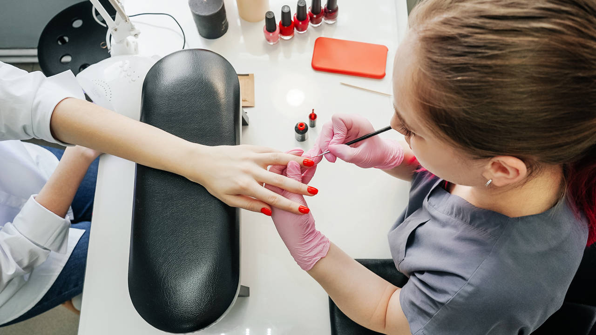

Este sitio web se trata de un centro de estetica ubicado en la falda, en el lugar podemos encontrar un centro de manicura, tatuajes, peluqueria, depilaciones, masajes con agujas, maquinaria y manual.

Un masajista es un profesional de la salud que brinda masajes a pacientes que se encuentran en fisioterapia, que sufren problemas de salud o que desean aliviar el estrés
Un tatuador es un profesional que utiliza habilidades artísticas y técnicas para crear diseños permanentes en la piel de las personas
Un manicurista es un profesional que se dedica a realizar tratamientos de cuidado de las uñas de las manos y los pies.

Un peluquero es un profesional que se dedica a cortar, peinar y cuidar el cabello de sus clientes.